PROJECT NO. 04 · FIG. 4
多功能剧场设计MULTIFUNCTIONAL THEATRE
设计说明 DESIGN STATEMENT
场地位于山东省临沂市河东区——市政府所在的新城区，发展迅速、高楼林立，商业发达而文艺类建筑稀缺，市民需要一个多功能剧场。如何在「钢铁森林」中脱颖而出，成为设计要解决的重要问题。设计以「蛛网」为逻辑：蜘蛛结网的逻辑用数学语言表达，就是寻找中心点的问题。受 Stephen Wolfram 教授超图演变算法的启发，取其逻辑链之一生成建筑的主要结构——蛛网悬索：屋顶及一至三层的各层悬索在斜向支撑柱与侧向拉杆柱之间张拉成型，并对蛛网进行受力优化，减少集中应力面积。
The site lies in Hedong District, Linyi, Shandong — the municipal seat, a fast-growing new town of towers and commerce yet few cultural buildings, where citizens need a multifunctional theatre. Standing out in this "steel forest" is the question to solve. The design follows the logic of the spider web: in mathematical language, web-spinning is the problem of finding a centre. Inspired by Professor Stephen Wolfram's hypergraph-evolution algorithm, one of its logic chains generates the main structure — the web of suspension cables: roof and floor cables on levels one to three are tensioned between diagonal support columns and lateral tie columns, then force-optimised to reduce areas of concentrated stress.
主效果图 MAIN RENDERING
「蛛巢」主效果图：蛛网悬索结构包裹剧场主体，在临沂新城的楼群间塑造出独特的城市表情。

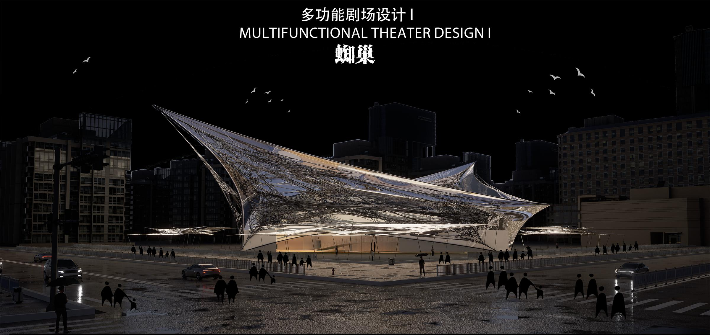
场地与问题 VENUE & ISSUES
临沂市河东区是市政府所在区，新城区发展迅速、高楼林立，商业圈和居住小区占据城区，而大型公共文化建筑几乎没有——市民需要一个多功能剧场。总平面与技术经济指标：总用地面积约 10000 ㎡，总建筑面积 8650 ㎡，建筑密度 46%，容积率 0.865，绿化率 10%。
Hedong District, seat of the Linyi municipal government, is a fast-growing new town crowded with commerce and housing but almost no major public cultural building — citizens need a multifunctional theatre. General layout with technical-economic indices: site area about 10,000 m², GFA 8,650 m², coverage 46%, FAR 0.865, greening 10%.

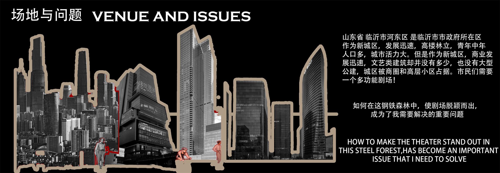

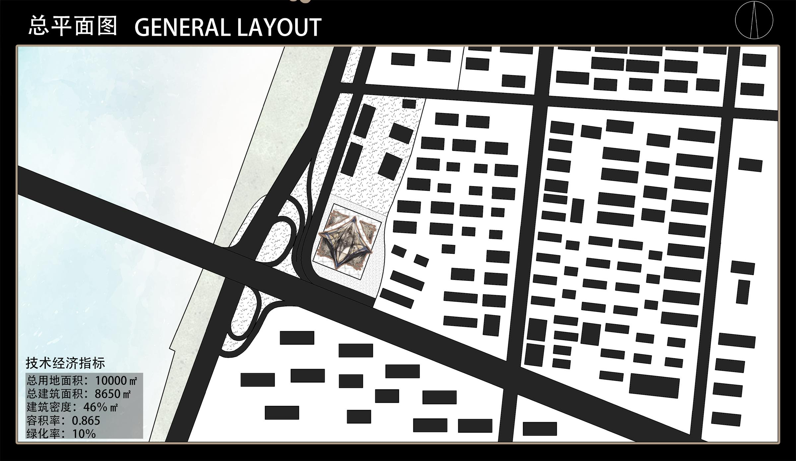
蛛网逻辑 SPIDER-WEB LOGIC
「蛛网」逻辑：蜘蛛结网的逻辑用数学语言表达就是寻找中心点的问题。Stephen Wolfram 教授发明了超图演变的算法，设计取其逻辑链之一作为蛛网生成的逻辑——用超图演变的底层逻辑，生成建筑的主要结构。
The web logic: in mathematical language, web-spinning is the problem of finding a centre. Taking one logic chain from Professor Stephen Wolfram's hypergraph-evolution algorithm as the generative rule, the underlying logic of hypergraph evolution produces the building's main structure.

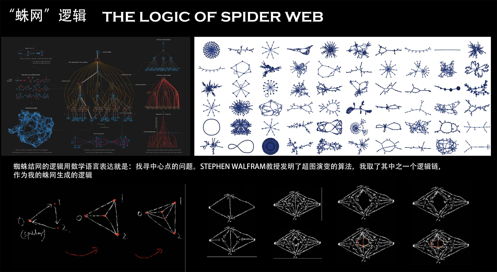

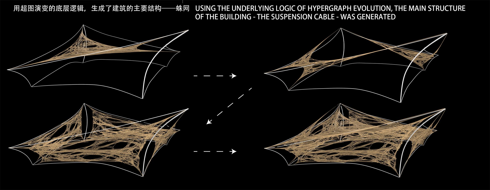
悬索结构分析 SUSPENSION STRUCTURE
结构组成：斜向支撑柱、侧向拉杆柱，以及屋顶、一层、二层、三层各层「蛛网」悬索。对蛛网进行受力优化，减少集中应力面积——屋顶蛛网与侧向三层蛛网的应力优化分别迭代。
Structure: diagonal support columns and lateral tie columns carry the web of suspension cables at roof level and on floors one, two and three. The web is force-optimised to reduce concentrated stress areas — roof web and lateral three-layer web are each iteratively refined.

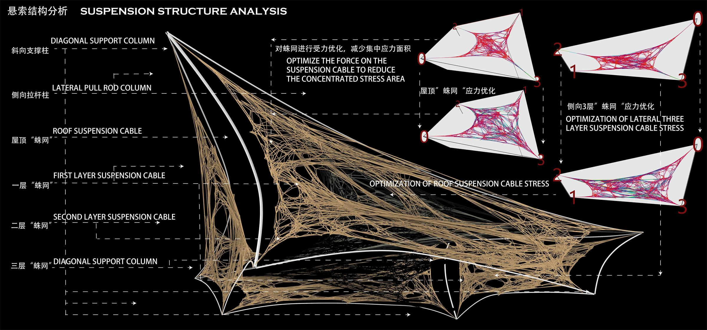
一层平面图 GROUND FLOOR PLAN
一层平面图（1:200）：售票处、衣帽间、医务间与商店临街布置，大小化妆间、道具间与清洗间围绕舞台组织，观众与演职人员流线分离。
Ground floor plan (1:200): box office, cloakroom, infirmary and shops front the street; make-up rooms, prop and washing rooms wrap the stage. Audience and performer routes stay separate.

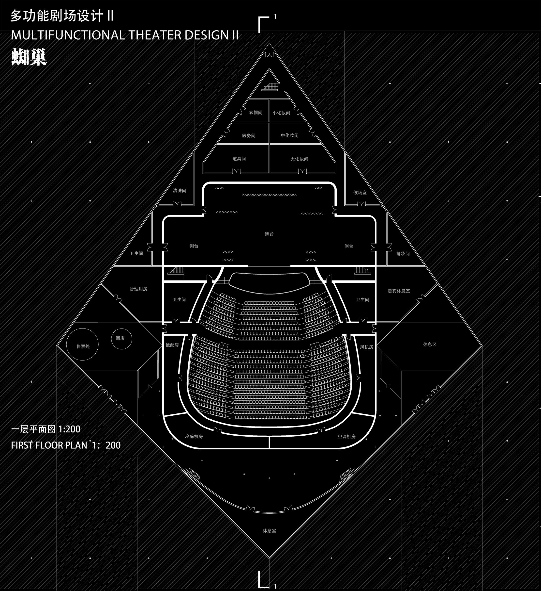
声学分析 ACOUSTICS
歌剧厅声学分析与声音的传播过程：通过可视化声学分析软件可以看到，声波经过三次反射之后消失，声波能量也从爆发峰值降至消失（颜色越艳，能量越大，反之越小）。
Acoustic analysis of the opera hall and sound transmission: visualisation software shows sound waves fading after three reflections, their energy falling from peak to zero (the brighter the colour, the greater the energy).

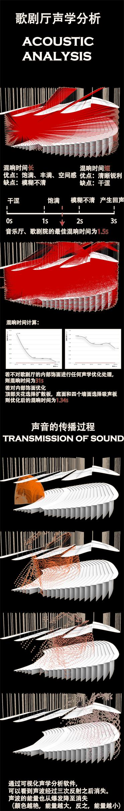
二层平面图与室内坡道效果图 SECOND FLOOR & RAMP RENDERING
室内坡道模型：坡道创造的檐下空间与通高空间，让二层平面（1:200）的办公、会议与观演空间彼此连通。
Indoor ramp model: under-eave and double-height spaces created by ramps connect offices, meeting rooms and performance spaces of the second floor plan (1:200).

幕墙与结构大样 CURTAIN WALL & STRUCTURE
点支撑式玻璃幕墙大样与蛛网结构大样（蛛网张拉一体化钢结构详图），展示幕墙与悬索的交接。
Detail of the point-supported glass curtain wall and the spider tensioning integrated steel structure, showing the junction of glazing and cables.

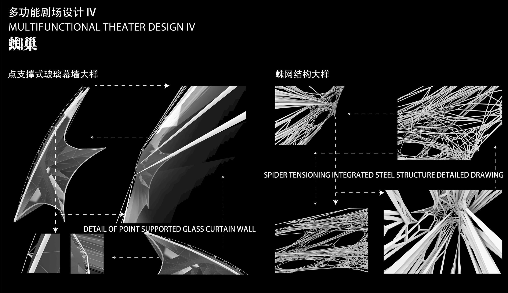
剖面图与立面图 SECTION & ELEVATION
1-1 剖面图（1:200）：观演厅的升起坡度、檐下坡道空间与蛛网屋盖在剖面上的关系；西立面效果图（1:200）展示幕墙与悬索的交接。
Section 1-1 (1:200): the auditorium rake, the ramped under-eave space and the web roof read together in section; the west elevation (1:200) shows the junction of glazing and cables.

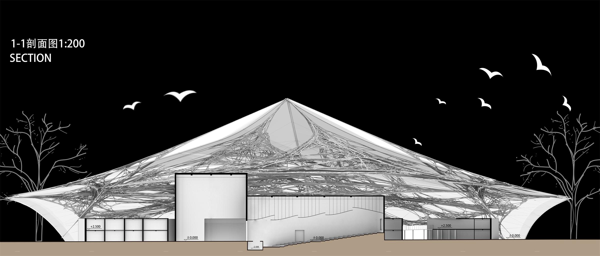

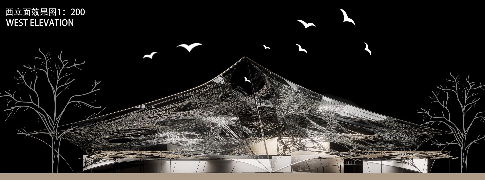
效果图 RENDERINGS
室内外效果图：接待室、休息室与大化妆间等功能用房与剧场空间的整体关系。
Indoor and outdoor renderings: reception, lounges and the grand make-up room in their relation to the theatre as a whole.

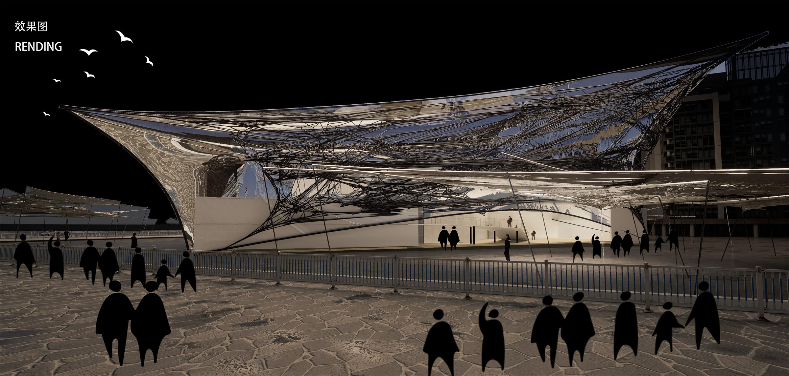

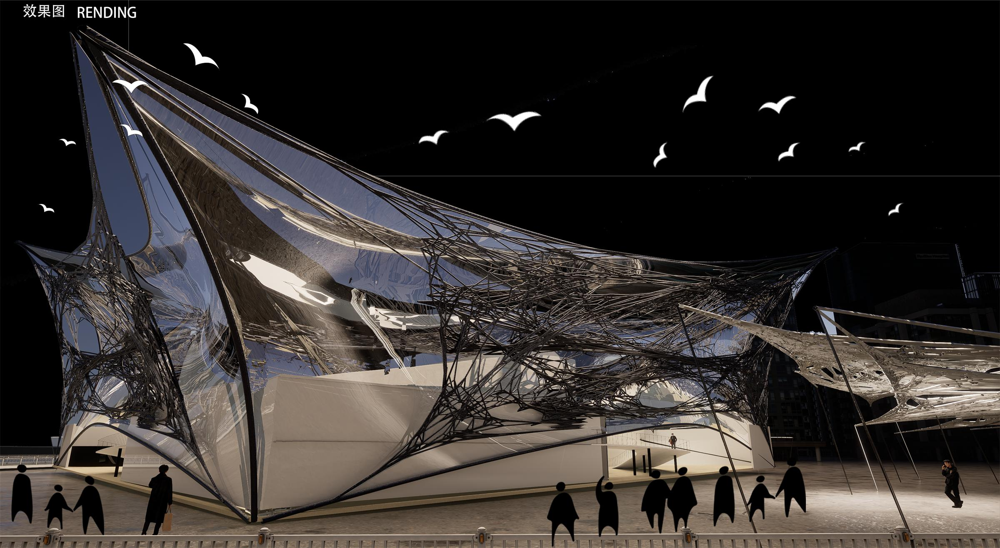